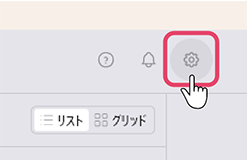

カスタムLLMの設定
カスタムLLMのサーバの構築
ChatGPTの互換サーバについて
ailia DX insightはChatGPTの互換サーバに対応しています。この章では、FastChatを使ってカスタムLLMをChatGPT API互換サーバーとして使用する方法を採用します。
FastChatのインストール
サーバーを立てる端末にpythonモジュールとしてfschatをインストールします。
pip3 install fschat
サーバの起動
vicuna-7b-v1.5をChatGPT API互換サーバーとして起動します。
python3 -m fastchat.serve.controller
python3 -m fastchat.serve.model_worker –model-names “vicuna” –model-path lmsys/vicuna-7b-v1.5 –load-8bit
python3 -m fastchat.serve.openai_api_server –-host localhost –-port 8000
カスタムLLMのクライアントの設定
設定画面の呼び出し
ailia DX insightの初期画面にて、右上の歯車アイコンをクリックして設定ウィンドウを表示させます。

「チャットAI」の項目の中にある「カスタム（OpenAIサーバー）」をクリックし、「+追加」を選択します。
カスタムモデル登録
カスタムモデル登録ウィンドウが開きます。各項目を記入します。
- 名前：使用するLLMの名称 (UI表示にのみ使用するため何でも構わない)
- 説明：必要に応じてメモとして使用
- モデル：OpenAI互換APIサーバーで指定したモデル名 (gpt-3.5-turbo等)
- URL(*)：OpenAI互換APIサーバーが発信しているIPアドレスとport番号 (サーバー公開が–host 192.168.1.10 –port 8000の場合、http://192.168.1.10:8000)
- 最大トークン長：モデルの対応している最大トークン数を設定（4096以上の値を設定する、この値に応じてRAGのtopKが決定される）
(*)未記入の場合、HTTPの接続エラーになります。